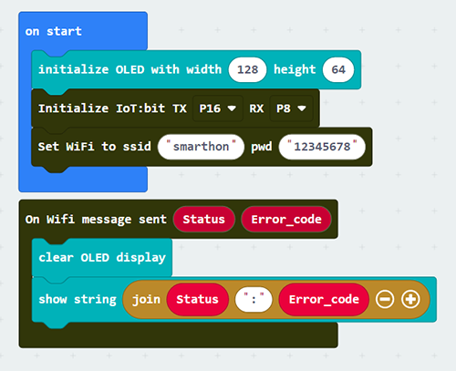

9. Chapter 5: Object to Object communication¶
In this example, micro:bit (sender and receiver) are connected to a channel called “chatroom”.
Peter want to send a smile message to Sally via internet (WAN). Peter’s micro:bit will send a Wi-Fi message “smile” to Sally’s micro:bit. When Sally receive a WiFi message smile, her micro:bit LED will show a smile icon.

*Before we control the micro:bit, please make sure your micro:bit is connected to the Wi-Fi.
9.1. Receiver side¶
Goal:
The receiver joins the channel, set the corresponding action when message received.
Step 1: Connect Wi-Fi
Before we join the channel, we need to connect to the network first. We have already known how to connect to the Wi-Fi on the first chapter.

Step 2: Join the channel
We can let the Micro:bit listening on specific channel to receive the command
Snap the
on button A+B pressedto stagePut the
WiFi Receiver join channelto theon button A+B pressedType the name of the channel “Chatroom”

*The user can join more than 1 channel, the maximum is 4.
Step 3: Set the corresponding action
After press the A and B button at the same time, Micro:bit will start listening on channel “chatroom” to wait other people send message to it. We need to use the On WiFi Receiver received to read the command and take action.
Snap
On WiFi Receiver receivedto stageIf need to received include value message, can use the include value version
On WiFi Receiver receivedat the same timeDo the
if-condition statementto the variablereceivedMessageWhen the
receivedMessagecalled “smile”, the LED will show a smile icon;When the
receivedMessagenot called “smile”, the LED will show a sad icon.

Full Solution
MakeCode: https://makecode.microbit.org/_VEgV8sH3Pgv3
You could also download the program from the following website:Optional:
1. Check channel joined status
When the Receiver was joined the channel, it can check the listening was started successfully or not. The On WiFi channel joined will provide the Error_code for you to determine the result.
Go to the OLED Tab
Snap
initialize OLED …toon StartSnap the
On WiFi channel joinedto stageUse
show stringto show theError_codewithchannelname
If Error_code is 0, means no error occur
If Error_code is not 0, means error occur
Normally, if no internet connection or the Channel Server is down, the code will be -28674

2. Show the source channel name of the message
When you join different channels, you may receive same command from each of them alternately, so you need to identify the message is come from which channel. The On WiFi Receiver received provide the variable used to identify.
Snap
clear OLED displayto make sure the display will not overlap.Snap
show stringto theOn WiFi Receiver receivedDraw the
ChannelandreceivedMessagevariable to theshow stringto display the on OLED

Full Solution
MakeCode: https://makecode.microbit.org/_5jP54jAt8f4F
You could also download the program from the following website:
9.2. Sender side¶
Goal:
The sender can send the message to specific channel
Step 1: Connect WiFi
Before we try to use WiFi Control function, we need to connect to the network, we have already know how to connect to the WiFi on the first chapter.

Step 2: Send the message
After connected to the internet, we can start send the message to our friend though the channel.
Snap the
on button … pressto stageSnap the
WiFi Sender send channel…inside theon button … pressInput the correct channel name for your target channel, for example chatroom
Input the message which need to be send
If need to send the message with value, use another version of
WiFi Sender send channel…which include the value input

Full Solution
MakeCode: https://makecode.microbit.org/_0MuagzX1b0w9
You could also download the program from the following website:Optional:
Check message sent status:
When the sender sending the message, if use the On WiFi message sent, it can know the sending result of message to channel.
Go to OLED Tab
Snap the
initialize OLED…toon StartSnap the
On Wifi message sentto stageSnap the
show stringinside toOn Wifi message sentSnap the
clear OLED displayto avoid overlapDraw the
StatusandError_codevariable into theshow stringtext placeholder
If the sending result is success, the Status will be OK and Error_code is 0
If the sending result is fail, the Status will be FAIL with Error_code
Normally, if no internet connection or the channel Server is down, it will be -28674

Full Solution
MakeCode: https://makecode.microbit.org/_EK4JLLHKEbf8
You could also download the program from the following website: